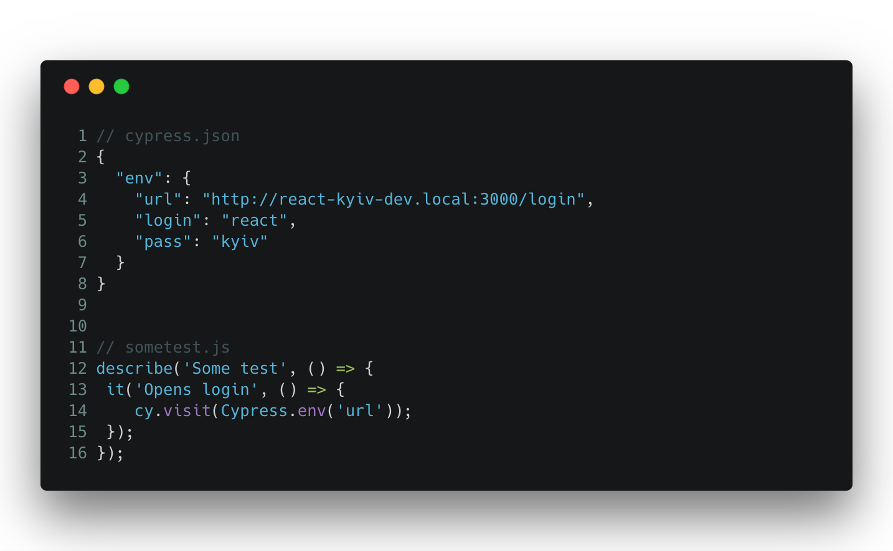
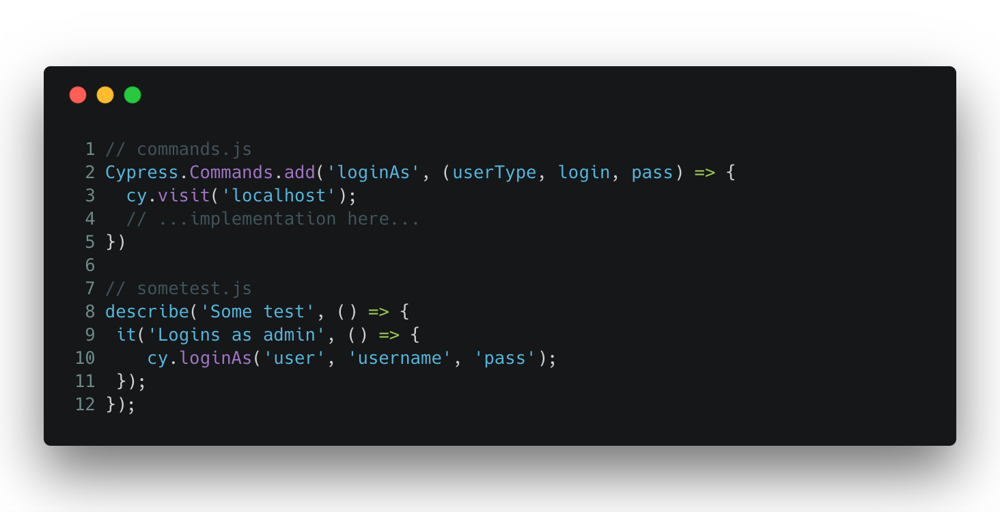
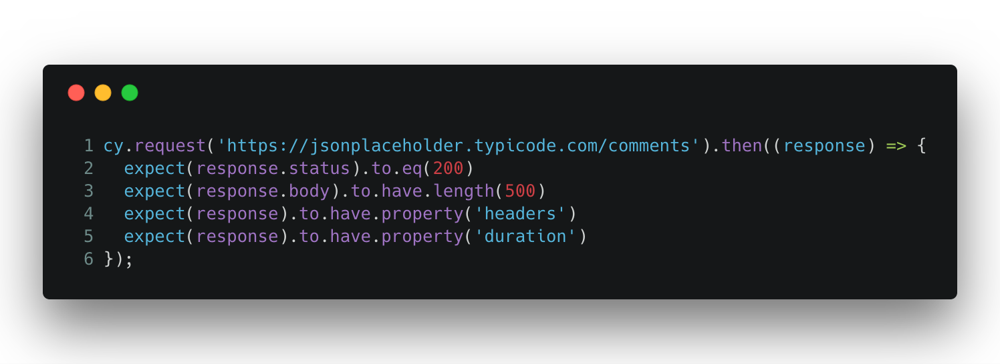
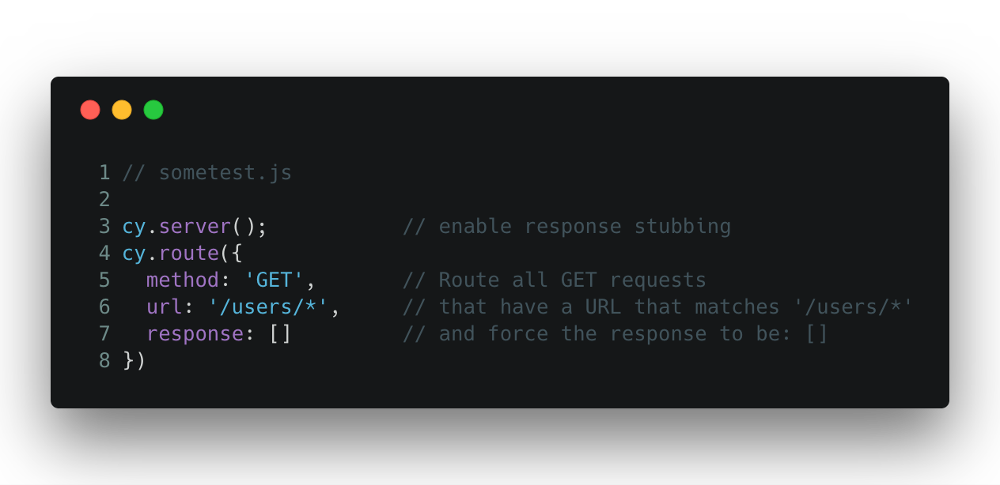
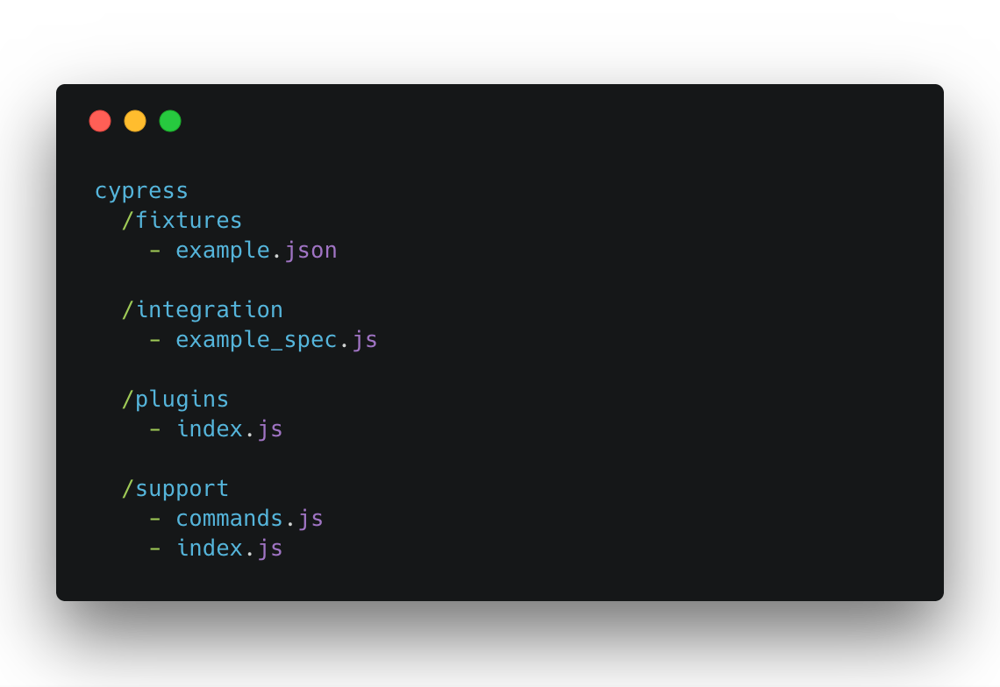
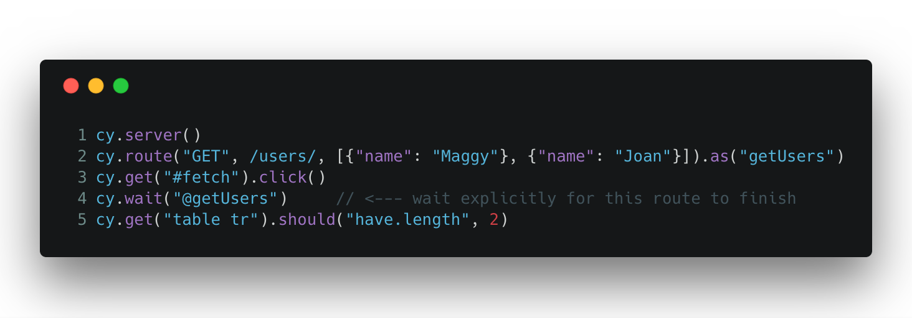

Painless E2E testing
with
Hello!
My name is Ostap
Let's talk about testing
Why i'm think i have competence ?
- start career as QA
- grow up to QA automation
- write my own "test framework"
- a lot of time debug my own "test framework"
- know why selenium sucks
- ...
- my wife is an QA automation
What is E2E testing?
- AngularJS bazzword
- Can be understanded as acceptance testing
- Writing "acceptance" word is too long...
- E2E naming is blessed to be hyped
OK.. what is acceptance testing?
- No isolation
- No mocking
- Test real system
- Means: Open browser and click on elements
Wait but, my E2E lib is...
- Nightwatch
- Protractor
- webdriver.io
- TestCafé
- Nemo
- selenium-webdriver
- ...
... is suck?
Because of — SELENIUM
What word "selenium" means for you
- That debugging is a hell
- That you definetly needs drivers for browsers
- That you need to keep driver version updated
- That you need some bindings to use selenium
- That it is unstable
- That it is hard to setup on Windows
- That startup/testing time is huge
Why Cypress
(at least for me)- Javascript framework
- No Selenium at all
- Runs with your application loop
- Debugging is a first class citizen
- Built-in tons of features
- No configuration required
- Is for devs and QAs
- Fast
- Have great documentation
Why it is painless?
Because you are not thinking of:
- Setuping dev environment
- Deciding on test runner (karma, mocha, jasmine, qunit)
- Deciding on assertion library (chai, expect)
- Deciding on mocking (sinon, testdouble)
- Structuring your tests
- Waiting for elements on the page
- Running stuff on Continious Integraion or pre commit
You may know
That the first selling feature of Redux was
time travel?
It here, also!
Why time travel matters on writing tests ?
(Probably you never wrote a test)Cypress have all stuff needed out of the box
Environment variables
Custom commands
API testing
 * CORS is bypassedServer mocks
Generated project structure
Easy explicit wait
And a lot more
- .debug() keyword
- Screenshots & videos
- Dashboard service with recorded tests (paid)
- Moment, lodash, jquery, minimatch prebundled
- Webpack, typescript, broserify plugins
- jUnit reporting
- And a lot, a lot more